Vos calories et macros restent faciles à lire.
Calories, protéines, glucides et lipides sont regroupés clairement, avec juste le niveau de détail nécessaire.
Application fitness pour iPhone
Elyra réunit nutrition, entraînement, hydratation, suppléments et communauté dans une seule app iPhone claire et rapide à utiliser.
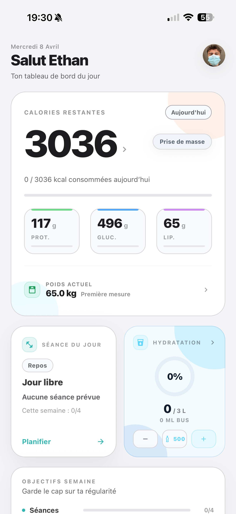
Nutrition
Journal alimentaire, macros, recherche d'aliments et scan de code-barres : Elyra garde tout au même endroit.
Calories, protéines, glucides et lipides sont regroupés clairement, avec juste le niveau de détail nécessaire.
Recherchez, scannez et ajoutez vos repas plus vite, avec des informations utiles au bon endroit.
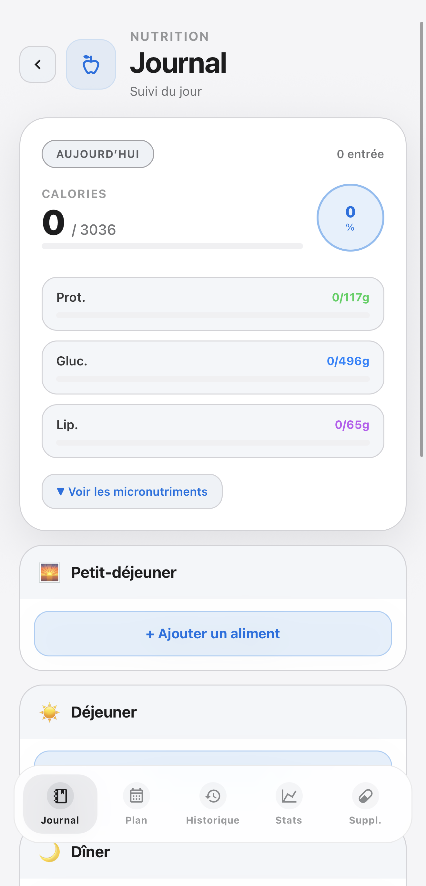
Ajoutez vos repas, validez ce qui est prévu et gardez vos apports visibles avant même de passer à table.
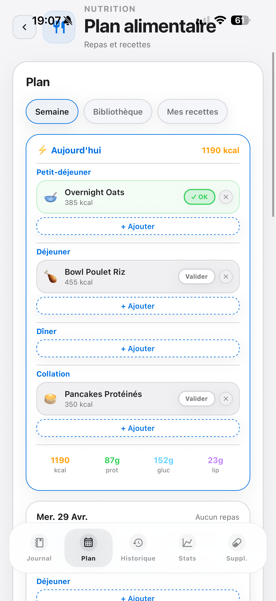
Calories, macros et micronutriments restent lisibles pour ajuster vos journées avec plus de précision.
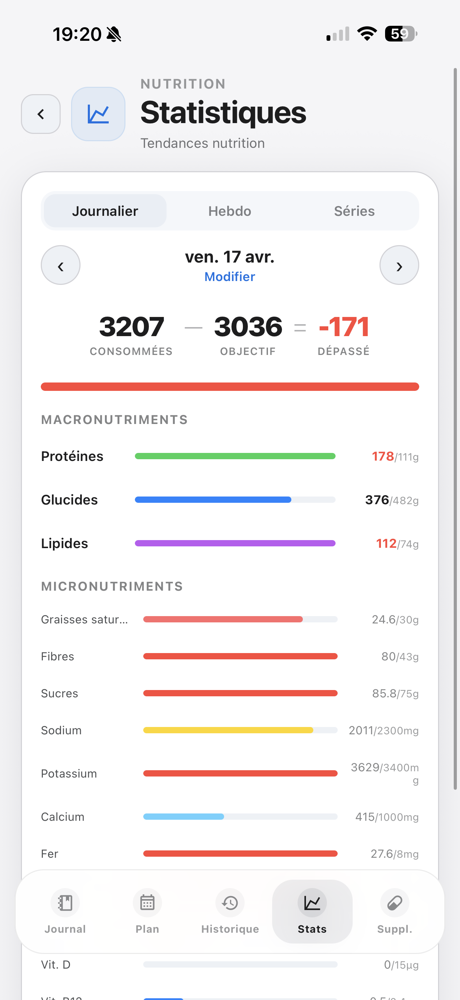
Consultez les ingrédients, les macros et les étapes, puis ajoutez la recette à votre planning.
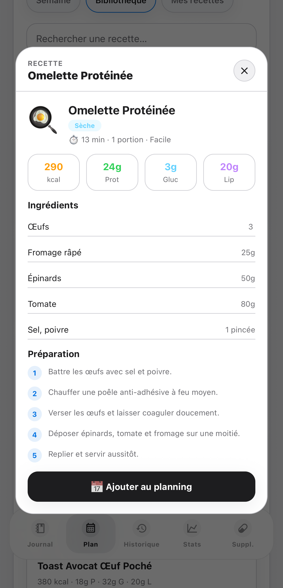
Training
Préparez vos séances, notez vos séries et retrouvez votre historique sans vous disperser.
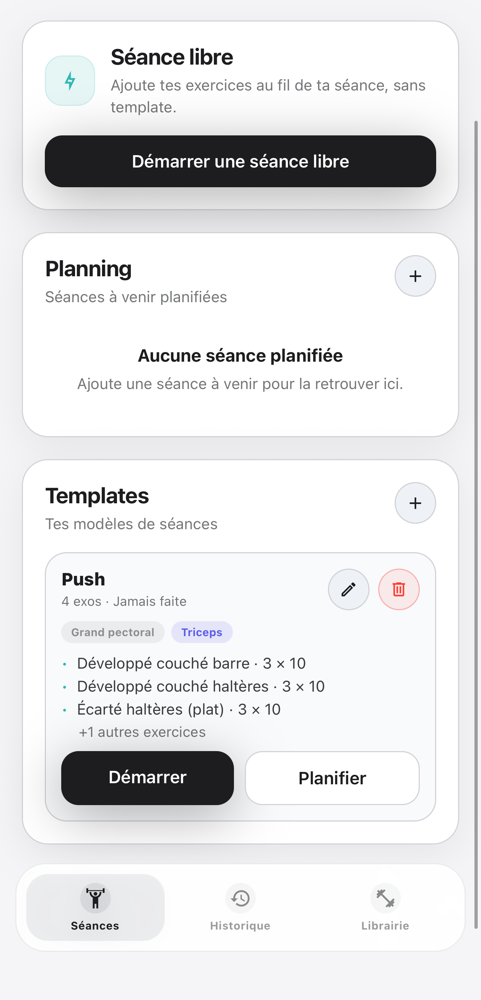
Modèles, exercices favoris et séances passées restent faciles à retrouver.
Les séries, charges et temps de repos restent visibles pendant l'entraînement.
L'historique aide à comprendre ce qui avance, sans devoir tout analyser.
Fiches, conseils, catégories et historique gardent vos mouvements faciles à consulter.
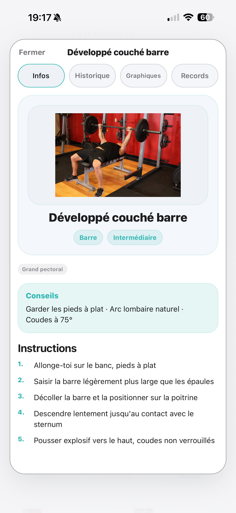
Nommez l'exercice, choisissez la catégorie, le muscle et le matériel pour enrichir votre bibliothèque.
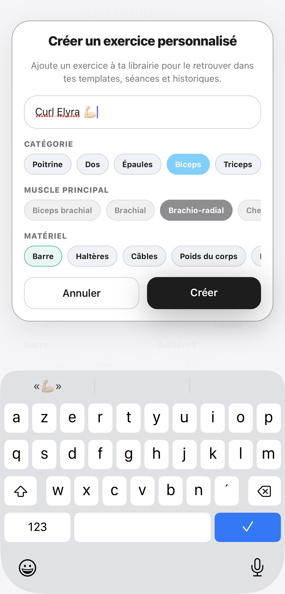
Charges, répétitions, repos et séries restent au même endroit pendant que vous avancez.
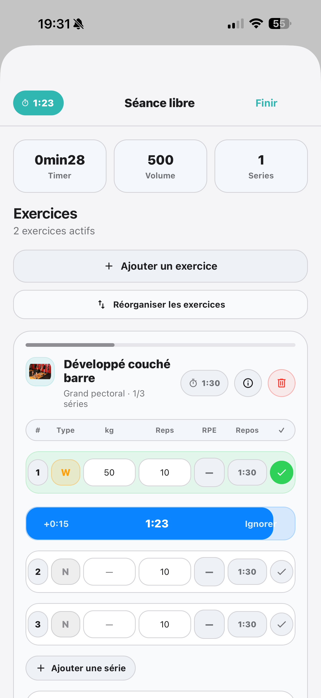
Progression
Poids, objectifs, séances et hydratation restent réunis pour suivre ce qui évolue jour après jour.
Elyra rassemble vos mesures et votre historique pour voir les tendances, ajuster vos objectifs et rester motivé.
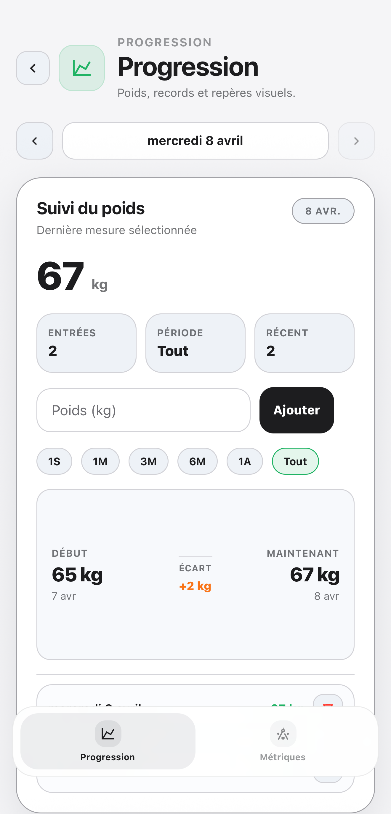
Ajoutez un verre, saisissez un volume précis et retrouvez votre suivi sur les derniers jours.
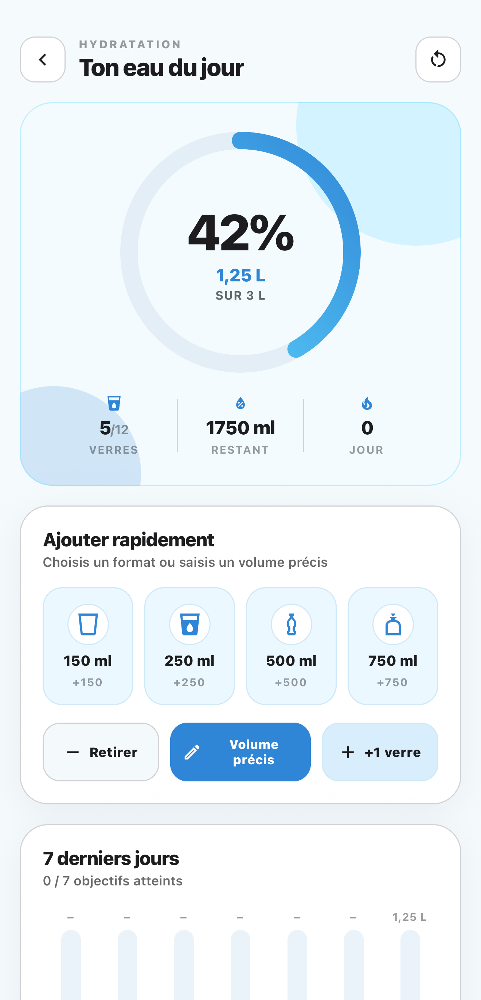
Fonctionnalités Elyra
Elyra va plus loin que le suivi classique : séances partagées, travail par côté et suppléments sont intégrés dans la même app.
Retrouvez vos amis Elyra, publiez vos séances et importez celles qui vous inspirent sans tout recréer à la main.
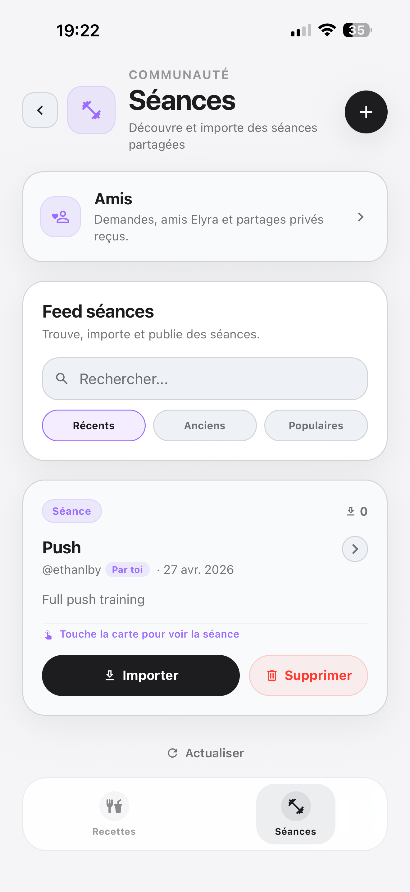
Pour les exercices travaillés par côté, Elyra permet de suivre la charge et les répétitions à gauche comme à droite.
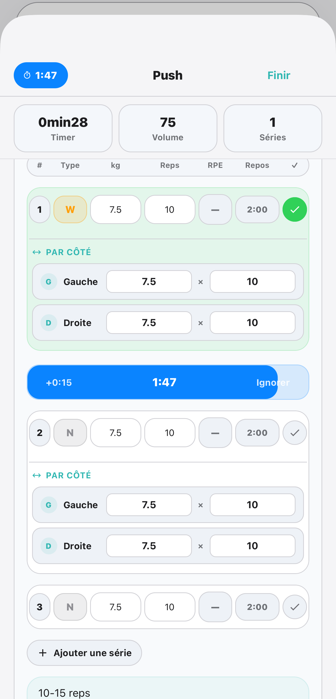
Suivez vos compléments, consultez les informations utiles et gardez une trace claire de ce que vous prenez.
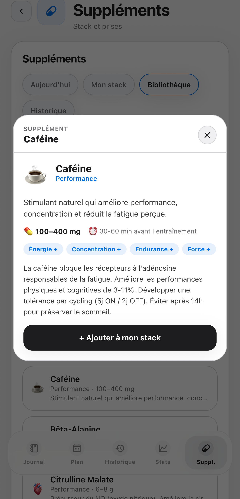
Pourquoi Elyra
Les écrans sont faits pour être compris vite, avec les bonnes informations au bon moment.
Nutrition, entraînement, communauté, suppléments et progression sont réunis, sans rendre le suivi plus compliqué.
Les pages de confidentialité, support et suppression de compte restent faciles à trouver.
FAQ
À celles et ceux qui veulent suivre nutrition, entraînement et progression, avec des outils comme la communauté et les suppléments, dans une app claire et agréable au quotidien.
Non. Elyra est un outil de suivi personnel. Pour un objectif médical, une pathologie ou une contrainte spécifique, demandez conseil à un professionnel qualifié.
Les données de compte et les informations ajoutées dans l'app, comme nutrition, entraînement, communauté, suppléments, progression, hydratation et profil. La politique de confidentialité détaille ces points.
La suppression se fait depuis l'app. Une page dédiée explique aussi les étapes et le contact support en cas de difficulté.
Elyra sur iPhone
Elyra réunit nutrition, entraînement, communauté, suppléments et progression pour garder le cap, sans transformer le suivi en contrainte.
Coach IA, reconnaissance de plats par photo. Sois prévenu du lancement.
Pas de spam, 1 email maximum par mois.